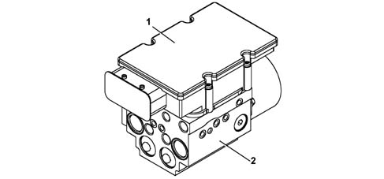
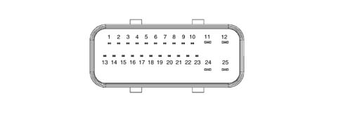
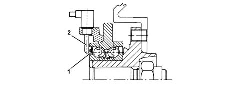
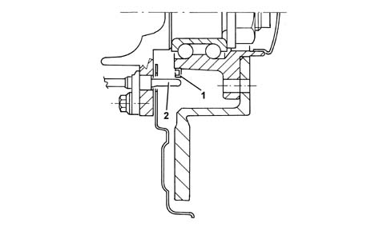
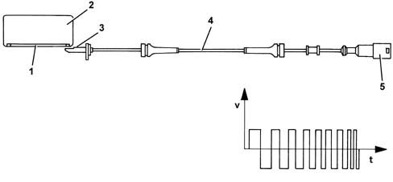

Composition
- Path
- Descriptions > 33 BRAKES > 3340 ANTI-LOCK BRAKING SYSTEM (A.B.S.) > 3340A ABS check/adjustment devices > Composition
- Kind
- system description
- Applies to
- all engines; all production periods
- Interactive page
- https://sloeber94.github.io/elrnDB-lThss/en/#/151935
Applies to: all engines; all production periods
Electro-hydraulic unit
Composition
The unit consits of an electronic control unit (1) and an electro-hydraulic control unit (2).

Electronic control unit
Specifications
Operation
The electronic control unit carries out the following functions:
- acquiring the data coming from the "active" wheel rpm sensors
- memorizing the control parameters defined during the vehicle P.D.I.
- memorizing the software
- processing the data acquired
- controlling the braking process
- detecting faults in the braking system components
- memorizing the fault codes and activating the ABS and EBD warning lights
- transmitting and receiving data via the C-CAN line
- transmitting and receiving data via the diagnostic connector
- conversing with the injection and CAE control units via the C-CAN line (only for versions with automatic transmission)
Electro-hydraulic control unit
Specifications
Function
It has the task of modulating the pressure of the fluid at the brake calipers via solenoid valves with the following operating stages:
- brake fluid pressure increase
- brake fluid pressure maintenance
- brake fluid pressure discharge
Composition
Structure
the electro-hydraulic control unit is composed of:
- eight 2-way solenoid valves
- a dual circuit recovery pump
- two low pressure accumulators
- two high pressure accumulators

- 1 - CAN-L line
- 2 - CAN-H line
- 3 - ASR switch
- 4 - ASR switch warning light
- 5 - N.C.
- 6 - K diagnostic line
- 7 - Right front sensor positive
- 8 - Right front sensor signal
- 9 - Right rear sensor positive
- 10 - Right rear sensor signal
- 11 - Signal earth
- 12 - +30 Supply
- 13 - CAN-L line
- 14 - CAN-H line
- 15 - N.C.
- 16 - VSO vehicle speed
- 17 - N.C.
- 18 - N.C.
- 19 - Left front sensor positive
- 20 - Left front sensor signal
- 21 - Left rear sensor positive
- 22 - Left rear sensor signal
- 23 - +15 Supply
- 24 - Pump earth
- 25 - +30 Pump supply
Active sensors
System details
The adoption of active sensors offers the following advantages:
- less sensitivity to the distance between the sensor and the magnetic ring (gap)
- a reduction in sensitivity to electro-magnetic interference
- the capacity of the active sensor to measure wheel rpm speeds down to zero (instead of 2.5 km/h for passive sensors)
- a saving in weight and dimensions
- a simplification of the transmission couplings through the elimination of the flywheels.
Structure
Active sensors consist of two fundamental components:
- a multipolar magnetic codifier (1) incorporated in the wheel hub bearing
- a (magnectic-resistive) receiver (2) facing the codifier.


Operation
General remarks
The active sensor operates according to the variation in the internal electrical resistance according to the intensity and direction of the lines of force of an external magnetic field (multipolr magnetic codifier) producing a variable square wave signal whose frequency varies according to the rotation speed of the wheel, but with a constant amplitude.
The active sensor is therefore an integrated electronic sensor, connected by means of a cable to the ABS control unit, from which it receives an electrical supply and to which it transmits the speed of the vehicle.
The flywheel is a multipolar ring, an elastomer with a certain quantity of magnetic particles which, by means of a special magnetization technique, are orientated to produce different magnets with alternate North South poles in a circumference arrangement.

- 1 - Magnetic ring
- 2 - Bearing
- 3 - Active sensor head
- 4 - Active sensor wiring
- 5 - Sealed connector